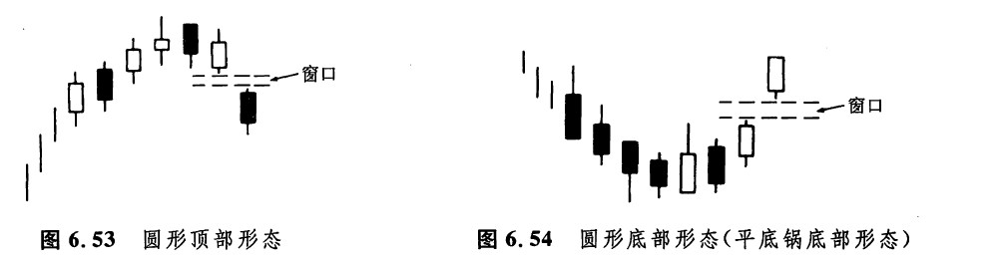
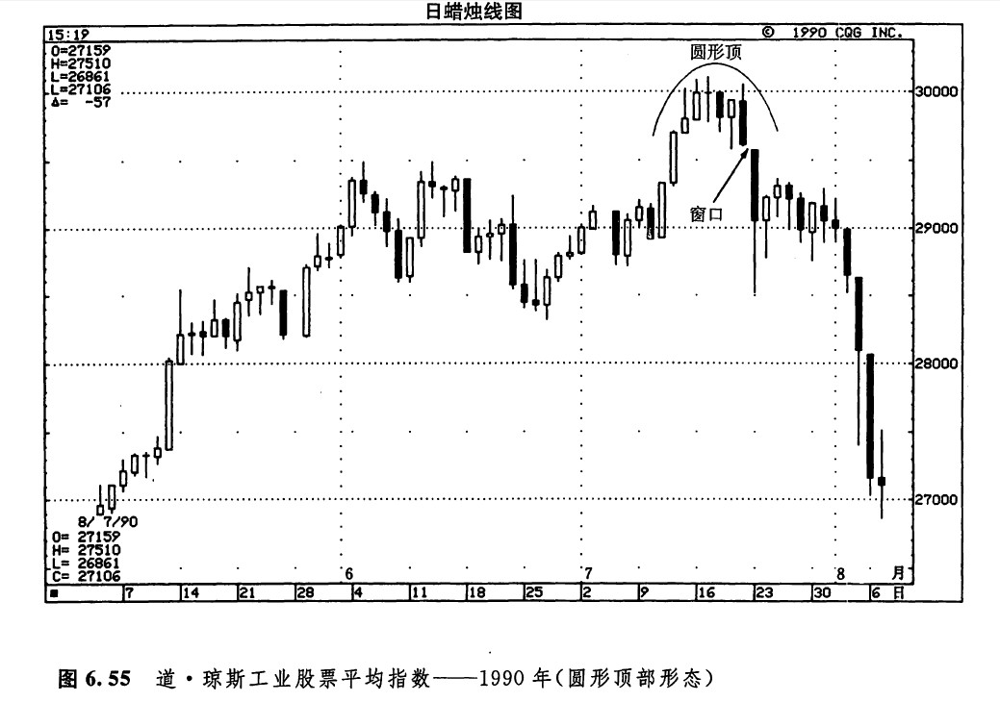
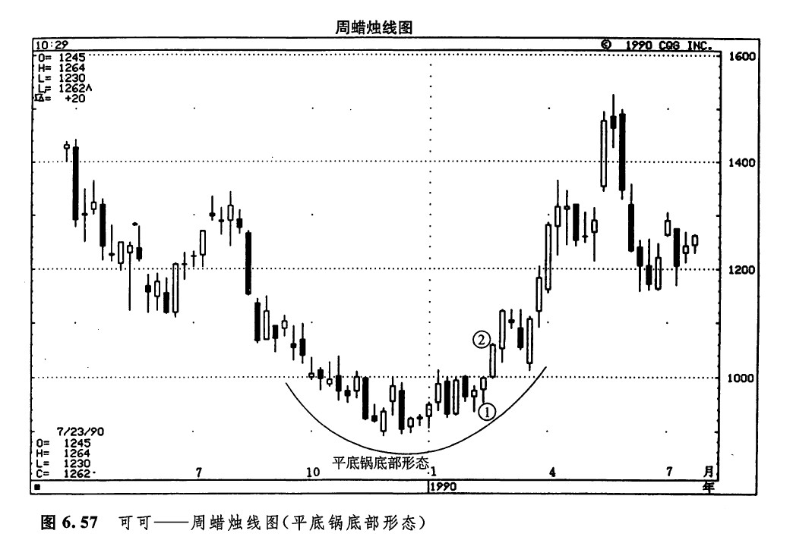

圆形顶部形态和平底锅底部形态（圆形底部形态）
在圆形顶部形态（如图6.53所示）中，市场逐步形成向上凸起的圆弧状图案，在这个过程中，通常出现的是一些较小的实体。最后，当市场向下跳空时，就证明圆形顶部形态已经完成。这一形态与西方的圆形顶部形态是相同的。在圆形顶部形态中，应当包含一个向下的窗口，作为市场顶部的验证信号。
平底锅底部形态（即圆形底部形态，如图6.54所示）反映出市场正处于底部反转过程中，市场逐步呈现出向下凹进的圆弧状图案，然后市场打开一个向上的窗口。本形态的外观与西方的圆形底部形态是一致的，不过，在日本的平底锅底部形态中，必须出现一个向上的窗口，以证实市场底部的完成。

从图6.55中我们可以看到，随着市场顶部反转形态的形成，逐步显现的圆弧状顶部轮廓，以及其中那群较小的实体，两路线索指明了一个圆形顶形态。请注意在本形态最高处的一根十字线，以及后来的向下打开的窗口，是如何帮助我们验证这个圆形顶形态的。在图示的窗口之后，是一根黑色蜡烛线，这是一条捉腰带线，又为我们增添了一条看跌的理由。如图6.56所示，为一个平底锅底部形态，它的底点出现在4月27日和28日，这两天的蜡烛线还组成了一个孕线形态。5月初出现了一个向上打开的窗口，由此证明该平底锅形态终于完成了它的使命。


如图6.57所示的平底锅底形态具有一副绝妙的外形。该形态的看涨验证信号来自蜡烛线2。虽然在蜡烛线1和蜡烛线2之间，市场并未形成窗口，但是实际上，蜡烛线1的最高点为1000美元，而蜡烛线2的最低点为997美元。这就意味着，这两根蜡烛线只差4个基本价格单位，就能形成一个窗口。此外，蜡烛线2是一根非常坚挺的白色捉腰带线。

下一篇：塔形顶部形态和塔形底部形态
上一篇：数字3在蜡烛图技术中的重要性